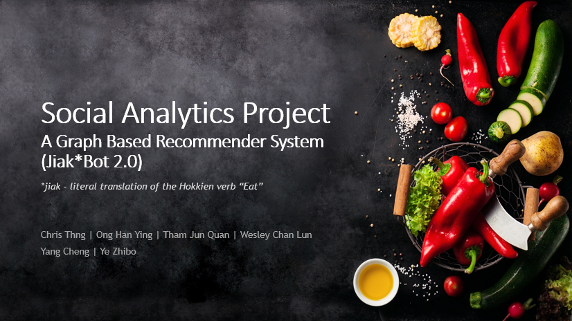

For ISSS 608 - Social Analytics and Application
|
Objective of Web Portal:
Description:
This is where we document and showcase the analytical works for the group project as a proof of concept.
Navigation:
Analytical Approach: Methodologies to derive recommendations for each users.
|
|---|